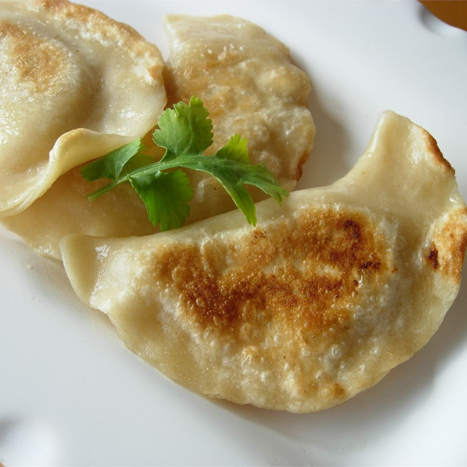

Pierogies

Original link
Ingredients
- 3 cups all-purpose flour
- 1 teaspoon salt
li>
- 2 tablespoons butter
li>
- 2/3 cup water
- 1 tablespoon extra virgin olive oil
- 1 small yellow onion, diced
- 1 (7.6 ounce) package instant mashed potato flakes
Directions
- In a medium bowl, stir together the flour and salt. Cut in the butter using a fork until pieces are very small. Stir in the water and mix until well blended. If the dough is too sticky, stir in a little more flour until you can knead it on a floured surface. Knead the dough for 2 to 3 minutes. Cover, and let rest for 10 or 15 minutes.
- On a lightly floured surface, roll the dough out to 1/4 inch thickness. Cut into circles using a cookie cutter or large glass. Set aside while you prepare the filling.
- To make the filling, prepare the mashed potato flakes according to package directions. Set aside. Heat the olive oil in a skillet over medium heat. Add the onions; cook and stir until soft and transparent. Remove from the heat, and mix in the mashed potatoes.
- Place one tablespoon of the pierogi filling onto each circle of dough. Fold circles over and pinch the edges to seal tightly so that no filling will escape while they boil. They can be frozen at this time if you like.
- Bring a large pot of water to a boil. Carefully drop several perogies into the water. They are done when they float to the top. Continue the process with remaining perogies. You can also fry the perogies in some butter with onion before serving if you like.
Home Page